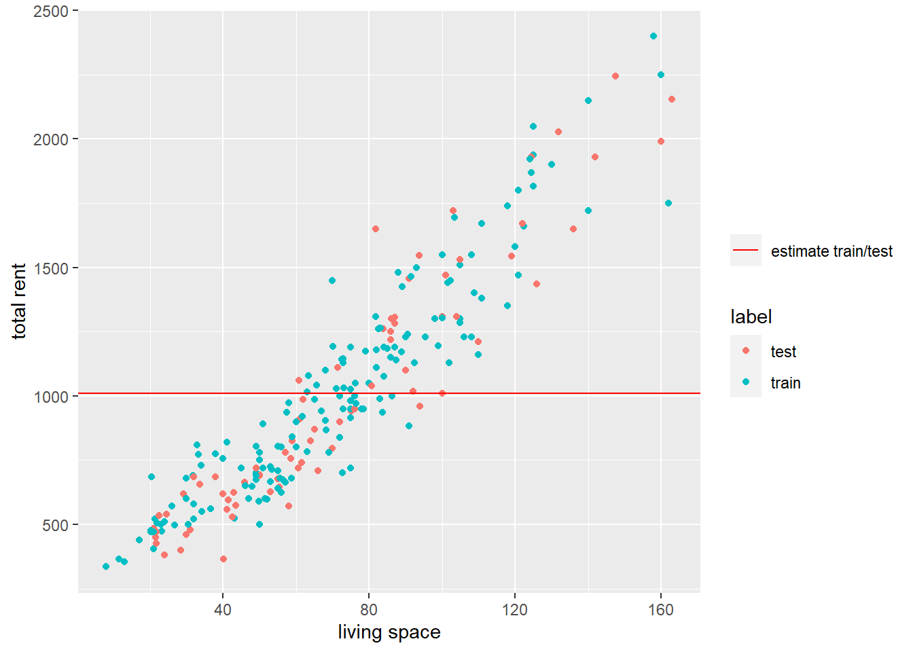
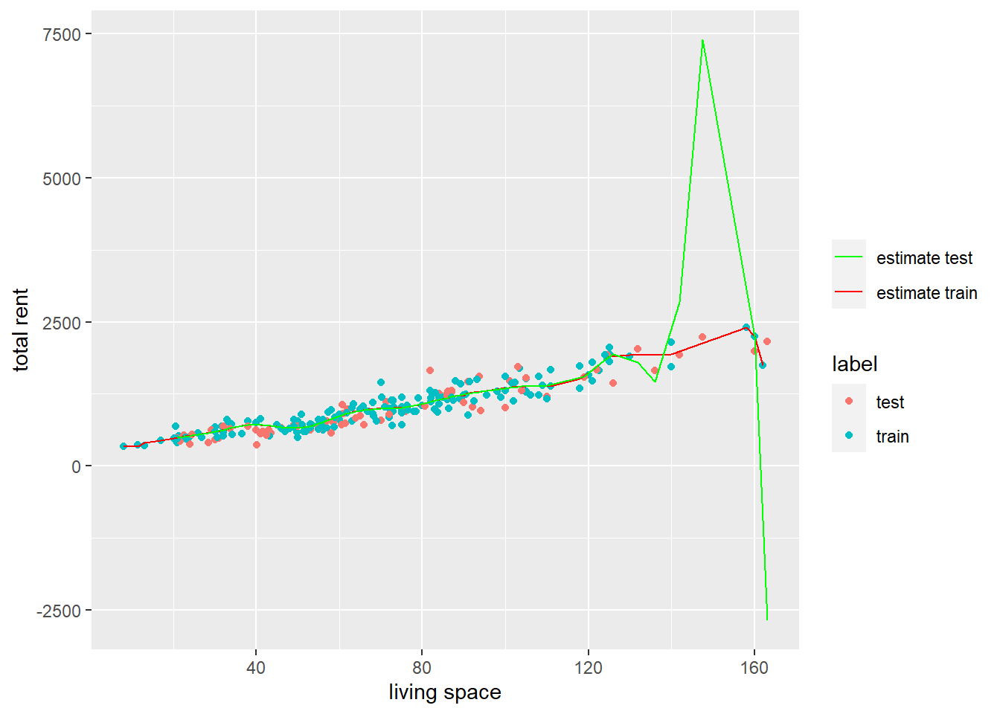
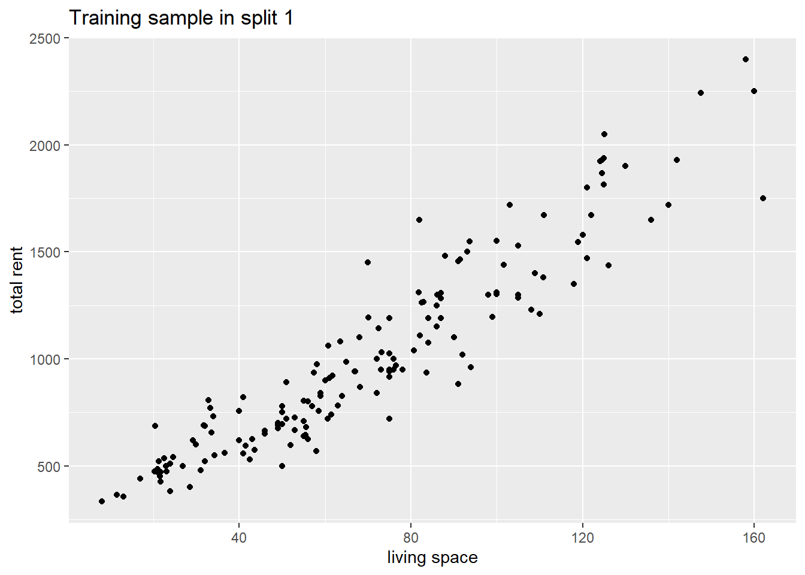
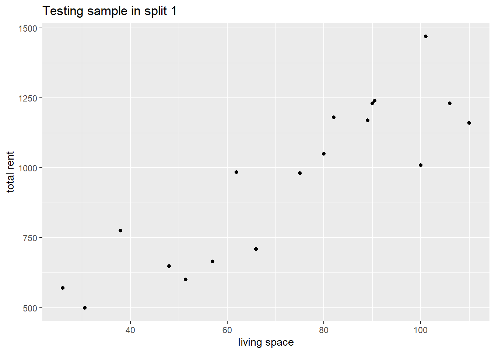
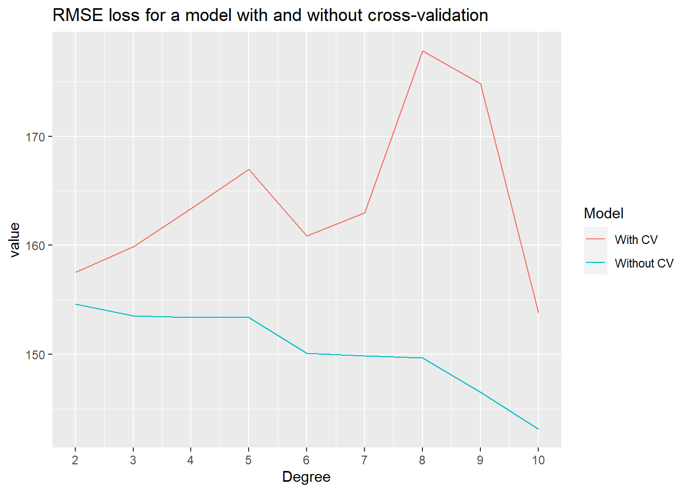
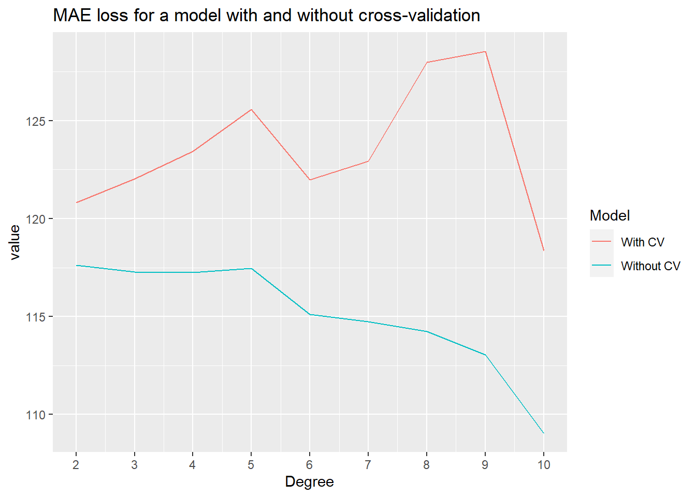

library("tidyverse")
library("tidymodels")Problem Set 02
Foreword
In this exercise session, we want to explore different metrics for calculating losses, review linear regression, and learn how to split our data into training and test data and why that is important.
Exercises
Exercise 1: Metrics
Exercise 1a:
In the lecture, we talked about different loss functions, as well as their advantages and disadvantages. The goal of this exercise is to review some of the loss functions introduced.
Exercise 1a i:
Write three different functions loss_mse, loss_mae, and loss_rmse that calculate the respective loss value. Each function should take two vectors y and yhat as an input and return the respective loss value.
Test the loss functions with the following inputs. You can check your answers below.
targets <- c(120, 97, 4, 25, 15)
predictions <- c(111, 92, 9, 29, 20)
loss_mse(targets,predictions)[1] 34.4loss_mae(targets,predictions)[1] 5.6loss_rmse(targets,predictions)[1] 5.865151Exercise 1a ii:
Write a function loss_huber that returns the Huber loss for two given vectors y, yhat, and a threshold \(\delta\). The Huber loss of two vectors can be calculated as follows:
\[ \mathrm{loss_{huber}} = \sum_{i=1}^{\mathrm{length(y)}} \mathcal{L}(y_i,\hat y_i) \]
where
\[ \mathcal{L}(y_i,\hat y_i) = \begin{cases} \frac{1}{2}(y_i-\hat y_i)^2, \quad&\text{if } |y-\hat y| <\delta\\ \delta (|y-\hat y|-\frac{1}{2}\delta),\quad &\text{else}. \end{cases} \]
loss_huber(targets,predictions,1)[1] 4.5Exercise 1b:
The goal of this exercise is to gain a deeper understanding of the different loss types calculated in the previous exercises. Consider the following scenarios and argue which loss function should be used.
Exercise 1b i:
Decide between MSE and RMSE:
- You are developing a predictive model for housing prices. Given various features of a house like size (in \(m^2\)) , number of floors, and the name of the neighborhood. You want to estimate its market value in EUR.
Exercise 1b ii:
Decide between MAE and MSE:
- Imagine you are working on a weather prediction model, where you aim to forecast daily temperatures for a location with strong and sudden changes in weather. The data contains
average wind velocity,air pressure,humidity, and many more. You also have historical temperature data for training and the overall goal is to minimize prediction errors.
Exercise 1b iii:
Decide between MAE, MSE, and Huber loss
- You are building a machine-learning model for autonomous vehicle control. The vehicles have to navigate through complex environments with all sorts of different obstacles varying in size and shape. The goal is to ensure the vehicle makes safe decisions based on some numerical value calculated based on the obstacles observed.
Exercise 2: Bias-Variance Trade-Off
In the lecture, we have already briefly discussed the issue of overfitting by considering a simple example. The goal of this exercise is to examine a real-world dataset and see how we can recreate the phenomenon of under and overfitting with a simple linear model.
Exercise 2a: Data exploration and manipulation
data_aux_filtered <- read.csv("rent_aux.csv")The rent_aux dataset is a preprocessed subset of the Apartment rental offers in Germany dataset. It contains 239 unique rental listings for flats in Augsburg. The data was sourced at three different dates in 2018 and 2018 and contains 28 different variables.
Instead of focusing on a comprehensive data cleaning and manipulation process, we will simply use the two variables livingSpace measuring the area of living in \(m^2\) of a listing and totalRent in EUR, representing the total amount of rent for a month (base rent + utilities).
Exercise 2a i:
Visualize the relationship between the two variables livingSpace and totalRent. The output could look like the plot below.

Exercise 2a ii:
Without conducting a thorough outlier analysis we decide to remove every listing that either costs more than \(2500\) EUR or is bigger than \(200\: m^2\). Use the filter function to remove those outliers.
data_aux_filtered <- data_aux_filtered %>%
filter(totalRent <= 2500, livingSpace < 200)Exercise 2b: Training a simple model
In this exercise, we want to fit an overly simple model to demonstrate it’s low performance on both, a training and test set.
Exercise 2b i:
To ensure consistent results, we set seed. Furthermore, the logical vector sample that is filled \(70\%\) with True values and \(30 \%\) False values is given. Its length matches the length of the data_aux_filtered dataset. The goal is to create a simple training and testing set by randomly splitting the data_aux_filtered dataset into two subsets.
set.seed(2)
sample <- sample(c(TRUE, FALSE),
nrow(data_aux_filtered),
replace=TRUE, prob=c(0.7,0.3)
)Exercise 2b i a:
Use the vector sample to create a list rent_train consisting of all samples in data_aux_filtered that match the position of True values in the vector sample. Subsequently, create a list rent_test that consists of all samples in data_aux_filtered that match the position of False values in the vector sample.
Exercise 2b i b:
Using the ifelse function and %in% operator, add a column called label to data_aux_filtered that consists of the strings "train" and "test" at the respective positions where a sample is either in rent_train or rent_test. You can use the variable scoutId to match the samples in rent_train and rent_test with samples in data_aux_fixed.
Exercise 2b ii:
Create a model simple_model using the lm function and fit the variable totalRent on totalRent. The underlying data should be the previously created list rent_train. By following this kind of weird procedure, we create a model that simply returns the mean of totalRent as a predictor. There will most likely be a warning that we can (at least this time) safely ignore.
Exercise 2b iii:
Calculate the RMSE loss of the training set rent_train and the testing set rent_test by using the loss_rmse function created in Exercise 1a. The fitted values on the training set can be accessed by using simple_model$fitted.values. In order to predict the values of the rent_train set, familiarize yourself with the predict function. For reference, you can find some plausible values below.
training error: 419.43
testing error: 474.93Exercise 2b iv:
Complete the following code snippet such that the plot looks like the one displayed below. What does the graph below show?
data_aux_filtered %>% ggplot(aes(
#############
##Fill Here##
#############
)) +
geom_point()+
geom_hline(aes(yintercept = simple_model$coefficients,
linetype = "estimate train/test"),
color = "red")+
scale_linetype_manual(name = " ",values = c(1,1))+
labs(
x = "living Space",
y = "total Rent"
)
Exercise 2c: Overfitting a model
Now that we have seen how robust (low variance) a simple model is, we will consider a more complex linear model in this exercise.
Exercise 2c i:
Create a model named model on the rent_train dataset, again, with totalRent as the response variable, but instead of simply using the livingSpace variable as a single predictor, use the poly(livingSpace,20) object instead.
Exercise 2c ii:
Calculate the RMSE of this model analogously to Exercise 2b iii. For reference, you can find some plausible values below.
training error: 125.43
testing error: 839.96Exercise 2c iii:
Explain in your own words the phenomenon observed in the following plot.

Intermezzo: Good practices for applied Machine Learning
In previous courses, we mainly focused on how to fit a certain model to a given dataset. However, this process could be described as model specification, rather than model development. So, what’s the difference between specifying a model and actually building a model?
Specifying a model (What we have done so far!):
The given dataset has been cleaned, transformed, and manipulated using a multitude of different packages and libraries.
Resampling methods have been applied but training the model on each subset or newly generated dataset is usually performed by using a loop or similar methods.
Similar to applying resampling methods, hyperparameter tuning is applied by using a loop or similar methods.
In summary, we have only basically specified the model we want to train and used a rather arbitrary and inconsistent approach for everything else.
One of the biggest issues we face, however, is when switching the model. The approach we have been using so far emphasizes working with one selected model that we wish to keep using after data preprocessing.
Developing a model (What we want to do moving forward!):
The main difference between the old approach and the new approach comes down to leveraging the advantages of the {tidyverse} and {tidymodels} frameworks. These frameworks allow for consistently preprocessing the data, setting model specifications, and performing steps like resampling and hyperparameter tuning all at once.
Another huge advantage is, that by following this procedure we can also swiftly switch between different ML models. For example, applying a random forest algorithm and switching to a neural network approach for the same data works is only a matter of changing a few lines of code as we will see in later exercises.
So where is the catch? At first, the process might seem a bit difficult or even “overkill” for the models we use. However, as the lecture progresses, our models will also (at least sometimes) become increasingly sophisticated. So we want to get used to this new process as early as possible in order to get used to it.
The biggest takeaways are:
Consistency: Independent of what the dataset or desired model looks like, we can (almost) always use the same procedure when building a model.
Effectiveness: Once we get used to this new approach, we can develop our models a lot more effectively than before.
Safety: Developing an ML model has many pitfalls and potholes on the way and by design,
{tidymodels}helps us to avoid those.
We will introduce and explore some of the aforementioned concepts in the next exercise and dive deeper in later sessions.
Exercise 3: Cross-Validation
Our first step down the {tidymodels} rabbit hole has already been broached in the lecture. By splitting the data into a training set and test set we can effectively evaluate our trained model on previously unseen data. However, how can we ensure that splitting the data once into a training set and test set yields a good model? A simple answer is: We can’t.
That is where cross-validation comes into play.
Exercise 3a:
Similar to the lecture slides we want to build a simple model for predicting the response variable totalRent in Augsburg by using the single predictor livingSpace.
Exercise 3a: i
Familiarize yourself with the initial_split function and create a split named split on the dataset data_aux_filtered.
split <- initial_split(data_aux_filtered)Exercise 3a ii:
Utilizing the newly created split, create the objects data_train and data_test by using the training and testing functions respectively. Note, that we are basically doing the same thing as in Exercise 2b, but instead of using the base R function sample, we’re now working with the {rsample} package that is part of the {tidyverse} framework.
#echo: false
data_train <- training(split)
data_test <- testing(split)Exercise 3a iii:
Familiarize yourself with the functionality of the vfold_cv function and create an instance named folds with the dataset data_train and the parameter v = 10.
The function vfold_cv randomly splits the data into v roughly equally sized subsets. One resample then consists of v-1 of those subsets. The picture below depicts how that process works for v = 5.

Exercise 3a iv:
Each split in the fold can be accessed as a variable by using the $ operator. In order to access split i, we have to use the notation folds$splits[[i]]. By using the analysis function we can then access the v-1 subsets of the original data set that are returned as a data frame. The assessment function returns the hold-out subset of the split.
Familiarize yourself with the functionality of the analysis and assessment function. For the first split, create a scatter plot for both of the subsets subsets. An example of what such plots could look like can be found below.

#|echo: false
folds$splits[[1]] %>% assessment %>%
ggplot(aes(x = livingSpace, y = totalRent))+
geom_point()+
labs(
x = "living space",
y = "total rent",
title = "Testing sample in split 1"
)
Exercise 3b:
Now that we have set up our data set for cross-validation, we can continue developing our model. The next step is to assemble the model that we wish to use. In this case, we will choose a simple linear model once again.
Exercise 3b i:
Instead of using a model created with the lm function of the {stats} package as in Exercise 2b ii, we will continue working with the {tidymodels} framework. The {parsnip} package offers a standardized interface for fitting models as well as the return values. A linear model can be created with the linear_reg function. Create a linear model called lm_mod using the linear_reg function. Note, that you do not have to pass any arguments to the function linear_reg at this point.
If calling the lm_mod object returns the same output as the one you can find below, you have solved this exercise correctly!
lm_mod Linear Regression Model Specification (regression)
Computational engine: lm Exercise 3b ii:
As a next step, we want to create a so-called recipe. According to the R Documentation, a recipe is a description of the steps to be applied to a data set in order to prepare it for data analysis. So a recipe can be thought of figuratively as a sequential procedure to cook our model!
In this exercise, our recipe is rather simple. Create a recipe called lm_recipe by using the recipe function. As arguments for the recipe function, you can pass the following formula. The second argument concerns the data that is given by the data_train dataset in our case.
formula <- totalRent ~ livingSpaceIf calling the lm_recipe object returns the same output as the one you can find below, you have solved this exercise correctly!
── Recipe ──────────────────────────────────────────────────────────────────────── Inputs Number of variables by roleoutcome: 1
predictor: 1Exercise 3b iii:
After creating our recipe, we create a so-called workflow. The workflow object aggregates information required to fit and predict from a model. In this case, our model lm_mod and the recipe lm_recipe. This whole procedure might seem quite complicated by now. However, later on, it will prove much more efficient and consistent this way.
Given the following code chunk, complete the workflow by adding the model lm_mod using the add_model function and the lm_recipe using the function add_recipe.
lm_wf <-
workflow() %>%
#################
##Continue here##
#################As above, you can check whether your workflow is correct by calling it and comparing it to the following output.
══ Workflow ════════════════════════════════════════════════════════════════════
Preprocessor: Recipe
Model: linear_reg()
── Preprocessor ────────────────────────────────────────────────────────────────
0 Recipe Steps
── Model ───────────────────────────────────────────────────────────────────────
Linear Regression Model Specification (regression)
Computational engine: lm Exercise 3b iii:
As a next step, we will specify the metrics we want to use for evaluating our model. The metric_set function allows us to combine multiple metric functions such as the RMSE, MAE, and Huber Loss.
Create an instance called multi_metric using the metric_set function. As arguments, you can pass rmse,mae, and, huber_loss.
As above, you can check whether your metric set multi_metric is correct by calling it and comparing it to the following output.
multi_metric# A tibble: 3 × 3
metric class direction
<chr> <chr> <chr>
1 rmse numeric_metric minimize
2 mae numeric_metric minimize
3 huber_loss numeric_metric minimize Exercise 3b iv:
Now that we have fully specified our model development process we can fit the model by piping the workflow lm_wf to the fit_resamples function. As the name suggests, the fit_resamples function fits the linear model on each of the folds provided. We simply have to specify the vfold_cv object and the metric_set in order to train the model and calculate the metrics.
lm_fit_rs <-
lm_wf %>%
fit_resamples(folds, metrics = multi_metric)Familiarize yourself with the collect_metrics function and apply it to the lm_fit_rs object. The function returns the average for the respective metrics over all folds and a few more key figures such as the standard deviation of the metric across all folds and the number of folds. A possible output can be found below.
# A tibble: 3 × 6
.metric .estimator mean n std_err .config
<chr> <chr> <dbl> <int> <dbl> <chr>
1 huber_loss standard 128. 10 4.71 Preprocessor1_Model1
2 mae standard 128. 10 4.71 Preprocessor1_Model1
3 rmse standard 160. 10 6.39 Preprocessor1_Model1Exercise 3c:
In this last exercise, we want to compare the cross-validation in-sample error to a linear model trained without cross-validation. The following code chunk already trains both models and saves the metrics.
degree_values <- seq(2,10)
all_metrics <- list()
all_metrics_CV <- list()
for (degree in degree_values) {
rec_poly <- recipe(totalRent ~ livingSpace, data = data_train) %>%
step_poly(livingSpace, degree = degree, options = list(raw = TRUE))
poly_wf <- workflow() %>%
add_model(lm_mod) %>%
add_recipe(rec_poly)
poly_fit <-poly_wf %>% fit(data = data_train)
metrics <- tibble(
rmse = loss_rmse(data_train$totalRent,
predict(poly_fit,data_train)$.pred),
mae = loss_mae(data_train$totalRent,
predict(poly_fit,data_train)$.pred),
huber_loss = loss_huber(data_train$totalRent,
predict(poly_fit,data_train)$.pred,
1)
)
all_metrics[[degree]] <- metrics
poly_fit_cv <-poly_wf %>% fit_resamples(folds, metrics = multi_metric)
metrics_cv <- poly_fit_cv %>% collect_metrics()
all_metrics_CV[[degree]] <- metrics_cv
}
tib_cv <- tibble(model_nr = rep(degree_values, each = 3),
bind_rows(all_metrics_CV))
tib <- tibble(model_nr = rep(degree_values), bind_rows(all_metrics))
rmse_vals <- tibble("Without CV" = tib$rmse,
"With CV" = tib_cv$mean[tib_cv$.metric == "rmse"],
"Degree" = degree_values) %>%
pivot_longer(cols = c("Without CV","With CV"))
mae_vals <- tibble("Without CV" = tib$mae,
"With CV" = tib_cv$mean[tib_cv$.metric == "mae"],
"Degree" = degree_values) %>%
pivot_longer(cols = c("Without CV","With CV"))
huber_vals <- tibble("Without CV" = tib$huber_loss,
"With CV" = tib_cv$mean[tib_cv$.metric == "huber_loss"],
"Degree" = degree_values) %>%
pivot_longer(cols = c("Without CV","With CV"))The goal of this exercise is to recreate the following three plots using the tibbles rmse_vals, mae_vals, and huber_vals.
Exercise 3c i:

Exercise 3c ii:

Exercise 3c iii:
